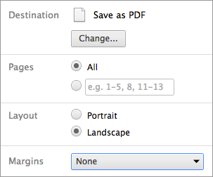

A simple intrudoction to
Reveal.js
by Han Xiao
What is reveal.js?
A FRAMEWORK to create presentations
Using HTML
Seriously, What is it?
It is just a bunch of JS , CSS , and <section>s
<head>
<link rel="stylesheet" href="css/main.css">
</head>
<body>
<div class="reveal">
<div class="slides">
<section>
<h2>Reveal.js</h2>
</section>
<section>
<h2>What is reveal.js?</h2>
</section>
</div>
</div>
<script src="js/reveal.min.js"></script>
</body>
And all your slides is in a single HTML file
Let's see it ALL!
How does it work?
It works
by Using CSS3 3D Transform
Why would I use it?
Why not PPT or Ooo?
It has many wonderful features
And,
It's FUN!
Some cool features
Vertical slide 1
Vertical slide 2
Now goto next slide by press RIGHT
<section data-markdown>
## Markdown Support
Write markdown directly in HTML code.
With **bold**, _italic_, [link](), `inline code` and lists:
* item1
* item2
</section>
by using showdown.js
code highlight
function hight() {
var prompt = "Hello world";
alert(prompt);
}
Supported by highlight.js.
Pure Web
Which means
We can use anything as developing a website
Like insert an img

<img width="375" height="300" src="img/success.jpg" alt="success">
Or a GIF
<img width="210" height="158" src="img/voice.gif" alt="VoiceOfLab">
And even a video
<iframe width="640" height="360" src="http://www.youtube.com/embed/u5X5cV-4LRo?rel=0" frameborder="0" allowfullscreen></iframe>
Mobile support
Runs well on Android 4.1 with default browser
and
3D transforms have been supported on iPhone since 2.0
Using any Javascript and CSS
like jQuery
,
If this does not satisfy you
It is easy to write our own library using Javascript/CSS
Missing a PDF?
It can be printed to a PDF by using Chrome
And many other features
- Speaker notes by Node.js
- Theme support
- Different transitions
- Custom events
- Authoring tools. rvl.io
- ...
But, it has some Cons
- Depends on CSS3 3D
- Not easy to code
- Not good to publish
- Sometimes requires network
Reference
- Reveal.js on Github
- Demo slides of reveal.js
- Intrudoction to CSS3 3D Transform
- Compare to impress.js